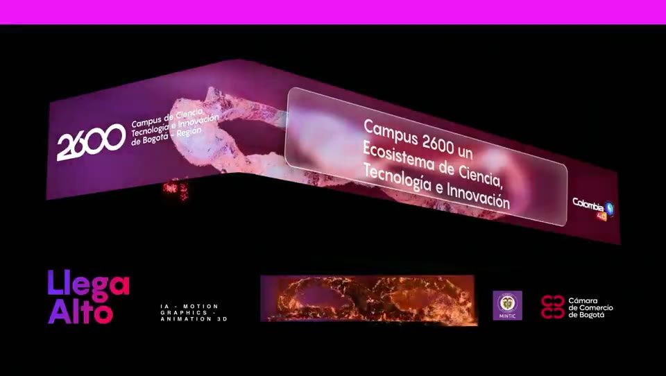

Cámara de Comercio de Bogotá · MinTIC
Campus 2600 — "Llega Alto"
Contenido DOOH y video mapping para el lanzamiento del ecosistema de ciencia, tecnología e innovación de Bogotá-Región, presentado en Corferias.
IA · Motion Graphics · Animación 3D